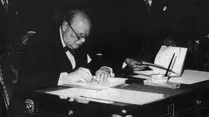
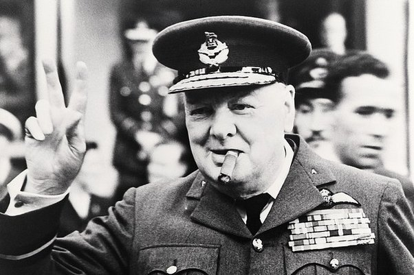

A Storied Career...

Prime Minister of the UK... Twice
Churchill was politically active for most of his adult life. He eventually achieved the highest elected position in the British government - Prime Minister. From this seat, he used his power to rearm the British and fight against the Nazis.

Won the War Against the Axis Powers
Churchill rallied the British people and returned from the brink of defeat to defeat the German war machine.

Warned Against the Impending Rise of the Soviet Empire
The "Iron Curtain" speech showed that Churchill was cognizant of the rising threat of the Eastern Block, and he attempted to warn everyone who would listen.